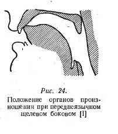

Составили: студенты 4 курса кафедры фонетики и методики преподавания иностранных языков СПбГУ Морсковатых М. С. и Сиверцева Э. А. под руководством Н. Б. Вольской (2015)
Редактор: П. А. Холявин (2023)
В консонантной системе аварского языка существует 44 различительные единицы (фонемы):
Аппроксиманты (щелевые сонорные) – сонорные согласные, аналогичные по способу образования фрикативным согласным, но без образования шума.
Согласный /w/ — лабиовелярный аппроксимант. На письме обозначается как «в». Данный согласный имеет два фокуса (или сужения): первый фокус — между губами, а второй — между задней частью спинки языка и мягким нёбом. При его произнесении язык приближается к мягкому нёбу, а губы принимают округлую форму. Данный аварский согласный схож с английским /w/ (как в словах wear, water, walk и т.д.)
![Profile of [w]](images/w_profile.png)
NB: В аварской речи могут также появляться аллофоны данного губно-губного согласного: [v] — звонкий губно-зубной спирант и губно-зубной аппроксимант [ʋ].
1. Сравните: [w] – [v]
2. Прослушайте и повторите:
Начало слова:
| ва | /wa/ | ‘и (союз)’ | |
| вац | /wat͡s/ | ‘брат’ | |
| вабаъ | /waˈbaʔ/ | ‘холера’ | |
| вахӏ | /waħ/ | ‘увы’ | |
| веги | /ˈweɡi/ | ‘лежание’ | |
| вегьи | /weˈhi/ | ‘приход’ | |
| вехь | /wex/ | ‘пастух’ | |
| вигъи | /wiˈʁi/ | ‘распятие’ | |
| вилизе | /ˈwilize/ | ‘исчезать’ | |
| воси | /ˈwosi/ | ‘(от гл. восизе)’ |
Середина слова:
NB: другая интерпретация этих сочетаний — огубленные согласные (/kʷ/, /χʷ/ и т.д.).
| квачӏ | /kwat͡ʃʼ/ | ‘лапа’ | |
| квар | /kwar/ | ‘верёвка’ | |
| хвезе | /ˈχweze/ | ‘умирать’ | |
| бакквей | /baˈk͡xːwej/ | ‘затмение солнца’ |
Конец слова:
| къелав | /ˈq͡χʼːelaw/ | ‘спорящий’ | |
| беццав | /ˈbet͡sːaw/ | ‘слепой (сущ.)’ |
Аффрикаты — согласные, при артикуляции которых смычка переходит в щель того же места образования.
Ца – ццин – цӏа – цӏцӏай
/t͡s – t͡sː – t͡sʼ – t͡sʼː/
Различительными для данных согласных являются следующие признаки:
Согласный /t͡s/ [t͡sʰ] — переднеязычная глухая краткая придыхательная аффриката. На письме обозначается как «ц». Данный аварский согласный произносится как русский, однако аварский звук отличается наличием придыхания, т.е. шума, производимого трением выдыхаемого воздуха о сближенные, но не сомкнутые голосовые связки. Чтобы правильно произнести данный звук, следует сопроводить его артикуляцию достаточно резким и интенсивным выдохом.
![Profile of [ts]](images/ts_profile.jpeg)
Аффрикаты, в отличие от взрывных, после раскрытия смычки завершаются щелевой фазой. Смычка образуется между передней частью спинки языка и верхними зубами (артикуляция смычки совпадает с артикуляцией взрывного твёрдого /t/, затем она переходит в щель, характер которой такой же, как и при образовании щелевого /s/).
NB: Стоит отметить, что придыхание является собственной характеристикой глухих неабруптивных согласных, но не является смыслоразличительным признаком.
Согласный /t͡sː/ — переднеязычная глухая долгая (интенсивная) придыхательная аффриката. На письме обозначается как «цц». Артикуляция данного звука совпадает с артикуляцией предыдущего, только звук произносится более длительно и интенсивно.
1. Сравните: /t͡s/ – /t͡sː/
2. Долгота имеет фонологическую значимость. Сравните:
| цин | /t͡sin/ | ‘раз, однажды’ | |
| ццин | /t͡sːin/ | ‘гнев’ |
3. Прослушайте и повторите:
| ца | /t͡sa/ | ‘зуб’ | |
| цин | /t͡sin/ | ‘раз, однажды’ | |
| цо | /t͡so/ | ‘один’ | |
| цер | /t͡ser/ | ‘лиса’ | |
| бецари | /beˈt͡sari/ | ‘косьба’ | |
| баци | /ˈbat͡si/ | ‘закрытие’ | |
| къец | /q͡χʼːet͡s/ | ‘спор’ | |
| вац | /wat͡s/ | ‘брат’ | |
| ццин | /t͡sːin/ | ‘гнев’ | |
| ццури | /ˈt͡sːuri/ | ‘опухоль’ | |
| бецц | /bet͡sː/ | ‘слепо’ | |
| беццаб | /ˈbet͡sːab/ | ‘слепой’ | |
| бецци | /ˈbet͡sːi/ | ‘молиться’ | |
| рецц | /ret͡sː/ | ‘мольба’ | |
| ицц | /ʔit͡sː/ | ‘родник’ |
Согласный /t͡sʼ/ — переднеязычная глухая краткая абруптивная аффриката. На письме обозначается как «цӏ». Артикуляция данного звука совпадает с артикуляцией /t͡s/, за исключением того, что этот согласный эйективный (абруптивный). Поток воздуха образуется за счёт быстрого движения гортани вверх при закрытой голосовой щели.
![Waveform of the ejective affricate [ts']](images/ts_ejective_waveform.png)
1. Сравните: /t͡s/ – /t͡sʼ/
Абруптивность – неабруптивность имеет фонологическую значимость. Сравните:
| ца | /t͡sa/ | ‘зуб’ | |
| цӏа | /t͡sʼa/ | ‘огонь’ | |
| цер | /t͡ser/ | ‘лиса’ | |
| цӏер | /t͡sʼer/ | ‘лёд, стекло’ |
Согласный /t͡sʼː/ — переднеязычная глухая долгая абруптивная аффриката. На письме обозначается как «цӏцӏ». Артикулируется так же, как предыдущий согласный, но данный звук является более интенсивным и долгим.
1. Сравните: /t͡sʼ/ – /t͡sʼː/
2. Прослушайте и повторите:
| цӏа | /t͡sʼa/ | ‘огонь’ | |
| цӏер | /t͡sʼer/ | ‘лёд, стекло’ | |
| цӏил | /t͡sʼil/ | ‘хрящ’ | |
| цӏуна | /ˈt͡sʼuna/ | ‘заполненный’ | |
| бецӏаб | /ˈbet͡sʼab/ | ‘тёмный’ | |
| бацӏи | /ˈbat͡sʼi/ | ‘ковка’ | |
| мацӏ | /mat͡sʼ/ | ‘язык’ | |
| бацӏ | /bat͡sʼ/ | ‘волк’ | |
| бецӏ | /bet͡sʼ/ | ‘темно’ | |
| цӏцӏай | /t͡sʼːaj/ | ‘прополка’ | |
| цӏцӏал | /t͡sʼːal/ | ‘кнут’ | |
| бацӏцӏин | /baˈt͡sʼːin/ | ‘чистка’ | |
| нуцӏцӏа | /nuˈt͡sʼːa/ | ‘дверь’ | |
| пицӏцӏ | /pit͡sʼː/ | ‘смола’ |
Чехь – ччехӏ – чӏер – чӏчӏел
/t͡ʃ – t͡ʃː – t͡ʃʼ – t͡ʃʼː/
Согласный /t͡ʃ/ [t͡ʃʰ] — альвеолярная глухая краткая придыхательная аффриката. На письме обозначается как «ч». Похож на соответствующий русский согласный, однако характеризуется придыханием. Смычка образуется между передней частью спинки языка и верхними зубами и твёрдым нёбом. Щелевая фаза такая же, как при артикуляции /š'/.
Согласный /t͡ʃː/ — альвеолярная глухая долгая (интенсивная) придыхательная аффриката. На письме обозначается как «чч». Отличается от предыдущего звука длительностью и интенсивностью.
1. Сравните: /t͡ʃ/ – /t͡ʃː/
2. Долгота имеет фонологическую значимость. Сравните:
| бача | /baˈt͡ʃa/ | ‘облако’ | |
| баччи | /ˈbat͡ʃːi/ | ‘запас’ |
3. Прослушайте и повторите:
| чан | /t͡ʃan/ | ‘охота’ | |
| чехь | /t͡ʃex/ | ‘живот’ | |
| бача | /baˈt͡ʃa/ | ‘облако’ | |
| бече | /beˈt͡ʃe/ | ‘телёнок’ | |
| къеч | /q͡χʼːet͡ʃ/ | ‘жажда’ | |
| нич | /nit͡ʃ/ | ‘стыд’ | |
| ччим | /t͡ʃːim/ | ‘ягнёнок’ | |
| ччехӏ | /t͡ʃːeħ/ | ‘скот’ | |
| баччи | /ˈbat͡ʃːi/ | ‘запас’ | |
| беччи | /ˈbet͡ʃːi/ | ‘брожение’ | |
| речч | /ret͡ʃː/ | ‘табак’ |
Согласный /t͡ʃʼ/ — альвеолярная глухая краткая абруптивная (эйективная) аффриката. На письме обозначается как «чӏ». Данный согласный произносится с твёрдым приступом.
1. Сравните: /t͡ʃ/ – /t͡ʃʼ/
2. Абруптивность имеет фонологическую значимость. Сравните:
| чан | /t͡ʃan/ | ‘охота’ | |
| чӏар | /t͡ʃʼar/ | ‘сорняк’ |
Согласный /t͡ʃʼː/ — альвеолярная глухая долгая абруптивная аффриката. На письме обозначается как «чӏчӏ».
1. Сравните: /t͡ʃʼ/ – /t͡ʃʼː/
2. Прослушайте и повторите:
| чӏар | /t͡ʃʼar/ | ‘сорняк’ | |
| чӏер | /t͡ʃʼer/ | ‘попкорн’ | |
| бачӏин | /baˈt͡ʃʼin/ | ‘приезд’ | |
| бечӏай | /beˈt͡ʃʼaj/ | ‘увядание’ | |
| чӏор | /t͡ʃʼor/ | ‘стрела’ | |
| мачӏу | /maˈt͡ʃʼu/ | ‘кремень’ | |
| мачӏ | /mat͡ʃʼ/ | ‘бедро’ | |
| чӏчӏеп | /t͡ʃʼːep/ | ‘корзина’ | |
| чӏчӏел | /t͡ʃʼːel/ | ‘заканчивать’ | |
| бечӏчӏи | /ˈbet͡ʃʼːi/ | ‘доение’ | |
| мачӏчӏад | /maˈt͡ʃʼːad/ | ‘откормленный бык’ | |
| мичӏчӏ | /mit͡ʃʼː/ | ‘крапива’ |
Латеральные согласные — это звуки, образуемые проходом воздуха по бокам (или с одного бока) смычки кончика языка с зубами или альвеолами, а также средней части языка с твёрдым нёбом. При их образовании происходит сужение прохода вдоль мускулов языка, обычно не вызывающее дополнительных шумов.
Лӏар – кьара
/t͡ɬː – t͡ɬʼː/
Различительными для данных согласных являются следующие признаки:
Согласный /t͡ɬː/ — альвеолярная латеральная глухая долгая придыхательная аффриката. На письме обозначается как «лӏ». Место артикуляции данного согласного — альвеолы, это означает, что кончик языка соприкасается с альвеолами. Воздух же проходит по бокам языка, а не посередине. Данный звук произносится очень напряжённо.
NB: буква «лӏ» не употребляется в литературном аварском языке.
Согласный /t͡ɬʼː/ — альвеолярная латеральная глухая долгая абруптивная аффриката. На письме обозначается как «кь».
1. Сравните: /t͡ɬː/ – / t͡ɬʼː/
2. Сравните:
| лӏар (лълъар) | /t͡ɬːar/ | ‘рог’ | |
| кьара | /t͡ɬʼːaˈra/ | ‘жирно’ |
3. Прослушайте и повторите:
| лӏар (лълъар) | /t͡ɬːar/ | ‘рог’ | |
| лӏутӏ | /t͡ɬːutʼ/ | ‘кол’ | |
| нилӏ | /nit͡ɬː/ | ‘кол’ | |
| вакьад | /waˈt͡ɬʼːad/ | ‘тесть’ | |
| кьаби | /ˈt͡ɬʼːabi/ | ‘удар’ | |
| кьара | /t͡ɬʼːaˈra/ | ‘жирно’ | |
| кьезе | /ˈt͡ɬʼːeze/ | ‘давать’ | |
| кьибил | /t͡ɬʼːiˈbil/ | ‘корень, основа’ | |
| кьох | /t͡ɬʼːoχ/ | ‘стернь’ | |
| кьо | /t͡ɬʼːo/ | ‘мост’ | |
| кьуж | /t͡ɬʼːuʒ/ | ‘зазубрина’ | |
| некь | /net͡ɬʼː/ | ‘дверная пята’ |
Лебал – лъелъ – лълъел
/l – ɬ – ɬː/
Различительными для данных согласных являются следующие признаки:
Согласный /l/ — переднеязычный латеральный аппроксимант. На письме обозначается как «л». Схож с русским соответствующим согласным. Образуется при поднятой вверх передней части спинки языка, которая смыкается с верхними зубами, при этом края языка опущены и образуют довольно широкий проход для воздушной струи.
Согласный /ɬ/ — переднеязычный латеральный глухой краткий придыхательный щелевой согласный. На письме обозначается как «лъ». Способ образования данного согласного — щелевой, что означает, что шум производится благодаря трению воздушной струи о сближенные, но не сомкнутые органы артикуляции. Его место образования — альвеолы (кончик языка соприкасается с альвеолами). Это также глухой согласный, это означает, что он производится без колебаний голосовых связок.
1. Сравните: /l/ – /ɬ/
2. Сравните:
| бал | /bal/ | ‘гребень’ | |
| балъ | /baɬ/ | ‘обычай’ |
3. Прослушайте и повторите:
| лаб | /lab/ | ‘подмётка’ | |
| лола | /ˈlola/ | ‘овод’ | |
| бал | /bal/ | ‘гребень’ | |
| лага | /laˈɡa/ | ‘орган’ | |
| бел | /bel/ | ‘лопата’ | |
| балай | /baˈlaj/ | ‘любовь’ | |
| лъар | /ɬar/ | ‘ручей’ | |
| лъор | /ɬor/ | ‘душа’ | |
| балъ | /baɬ/ | ‘обычай’ | |
| лъана | /ˈɬana/ | ‘изученный’ | |
| нилъ | /niɬ/ | ‘серп’ | |
| белъи | /ˈbeɬi/ | ‘смех’ |
Согласный /ɬː/ — переднеязычный латеральный глухой долгий придыхательный щелевой согласный. На письме обозначается как «лълъ». Артикуляция данного согласного соответствует артикуляции предыдущего согласного, однако данный звук отличает бо́льшая интенсивность и длительность.
1. Сравните: /ɬ/ – /ɬː/
2. Сравните:
| лъелъ | /ɬeɬ/ | ‘лён’ | |
| лълъел | /ɬːel/ | ‘вода (р.п.)’ | |
| балъ | /baɬ/ | ‘обычай’ | |
| малълъ | /maɬː/ | ‘нравоучение’ |
3. Прослушайте и повторите:
| лълъим | /ɬːim/ | ‘вода’ | |
| лълъади | /ˈɬːadi/ | ‘жена’ |
Особую трудность для русскоязычного человека могут представлять так называемые гуттуральные согласные. Гуттуральные (от лат. «guttur» — «горло») — общее название звуков, характеризующихся активной артикуляцией в задней части полости рта, в области фаринкса и гортани. Таким образом, гуттуральные согласные включают в себя заднеязычные, увулярные, фарингальные и ларингальные.
Сложность заключается в том, что система гуттуральных согласных аварского включает в себя 14 фонем, в то время как система гуттуральных согласных русского языка гораздо беднее – она представлена лишь шестью заднеязычными фонемами: твердыми /k/, /ɡ/, /x/ и мягкими /kʲ/, /ɡʲ/, /xʲ/.
Заднеязычные согласные (или велярные) — это согласные, которые образуются путём поднятия задней части спинки языка к мягкому нёбу или к задней части твёрдого нёба.
Согласный /ɡ/ — звонкий, смычный, по артикуляции схож с русским /ɡ/. На письме обозначается как «г».
1. Сравните: рус. галстук /ˈɡalstuk/ – ав. габур /ɡaˈbur/
2. Прослушайте и повторите:
| габур | /ɡaˈbur/ | ‘шея, ворот’ | |
| гурхӏел | /ɡurˈħel/ | ‘жалость’ | |
| гогари | /ɡoˈɡari/ | ‘борьба’ | |
| гванзу | /ɡwanˈzu/ | ‘пустырь’ | |
| хьаг | /xaɡ/ | ‘кастрюля, котёл’ |
Согласный /k/ [kʰ] — смычный, глухой, придыхательный. По месту образования схож с русским /k/, однако отличается наличием дополнительной артикуляции — придыхания. Чтобы правильно произнести данный звук, следует сопроводить артикуляцию звука /k/ достаточно резким и интенсивным выдохом. Легче всего контролировать себя с помощью листа бумаги: если поднести его ко рту во время артикуляции придыхательного согласного, можно заметить, что он отклоняется при выдохе. На письме обозначается как «к».
1. Сравните: рус. кепку /ˈkʲepku/ – ав. кету /ˈketu/
2. Прослушайте и повторите:
| кету | /ˈketu/ | ‘кошка’ | |
| бакизе | /ˈbakize/ | ‘зажигать’ | |
| курак | /ˈkurak/ | ‘абрикос’ | |
| квелъ | /kweɬ/ | ‘вожжи’ | |
| кесек | /keˈsek/ | ‘кусок’ |
Согласный /kʼ/ — смычный, абруптивный, глухой. Абруптивные (абруптивы, эйективные согласные) — нелёгочные (непульмональные), в основном взрывные согласные, образующиеся быстрым движением гортани вверх при закрытой голосовой щели, а затем расслаблении ротовой смычки. В то время как у пульмональных взрывных согласных избыточное давление в артикуляционном пространстве возникает при помощи воздуха, выходящего из лёгких, у абруптивных избыточное давление создаётся посредством давления воздуха между закрытой голосовой щелью и ротовой смычкой. Итак, чтобы правильно произнести этот звук, следует сопроводить артикуляцию заднеязычного /k/ дополнительным сжатием и подъёмом гортани. На письме обозначается как «кӏ».
1. Сравните:
| кӏул | /kʼul/ | ‘ключ’ | |
| курак | /ˈkurak/ | ‘абрикос’ |
2. Прослушайте и повторите:
| кӏул | /kʼul/ | ‘ключ’ | |
| букӏине | /ˈbukʼine/ | ‘быть’ | |
| кӏаз | /kʼaz/ | ‘платок’ | |
| кӏвезе | /ˈkʼweze/ | ‘мочь’ | |
| бакӏ | /bakʼ/ | ‘место’ | |
| кӏал | /kʼal/ | ‘рот’ |
Согласный /k͡x:/ — долгая глухая придыхательная аффриката. Любые аффрикаты образуются путём раскрытия смычки в щель, поэтому данный звук не должен представлять особую сложность для русскоязычного человека: достаточно начать произносить звук /k/, а потом быстро перейти к /х/. Аварский звук /kx:/ отличается своей долготой и интенсивностью. На письме обозначается как «кк».
1. Сравните:
| наку | /ˈnaku/ | ‘мелодия’ | |
| накку | /naˈk͡xːu/ | ‘мякина’ |
2. Прослушайте и повторите:
| ккал | /k͡xːal/ | ‘плесень’ | |
| баккизе | /ˈbak͡xːize/ | ‘появляться’ | |
| микк | /mik͡xː/ | ‘дуб’ | |
| накку | /naˈk͡xːu/ | ‘мякина’ | |
| ккезе | /ˈk͡xːeze/ | ‘попадать’ | |
| ккел | /k͡xːel/ | ‘урожай’ |
Согласный /k͡x:ʼ/ — долгая “скрипучая” глухая абруптивная аффриката. Артикулируется так же, как /kxː/, но с дополнительным сжатием и подъёмом гортани. На письме обозначается как «кӏкӏ».
1. Сравните:
| ккал | /k͡xːal/ | ‘плесень’ | |
| кӏкӏал | /k͡xʼːal/ | ‘ущелье’ |
2. Прослушайте и повторите:
| кӏкӏал | /k͡xʼːal/ | ‘ущелье’ | |
| рукӏкӏине | /ˈruk͡xʼːine/ | ‘смеркаться’ | |
| накӏкӏ | /nak͡xʼː/ | ‘облако’ | |
| кӏкӏор | /k͡xʼːor/ | ‘прядь, пучок’ | |
| кӏкӏуй | /k͡xʼːuj/ | ‘дым’ | |
| рикӏкӏен | /riˈk͡xʼːen/ | ‘число, количество’ |
Согласный /x/ — щелевой, глухой, краткий — по артикуляции абсолютно аналогичен обычному русскому /х/. На письме обозначается как «хь».
NB: Следует обратить внимание на то, что буква «х» в аварском обозначает другой звук — увулярный /χ/.
1. Сравните:
| хьухь | /xux/ | ‘туман’ | |
| жух | /ʒuχ/ | ‘щавель’ |
2. Прослушайте и повторите:
| хьибил | /xiˈbil/ | ‘бок’ | |
| бухьен | /buˈxen/ | ‘связь’ | |
| рахь | /rax/ | ‘молоко’ | |
| хьаг | /xaɡ/ | ‘кастрюля, котёл’ | |
| рехьед | /reˈxed/ | ‘стадо’ | |
| рихь | /rix/ | ‘жила’ | |
| хьухь | /xux/ | ‘туман’ |
Увулярные согласные получили свое название от увулы — маленького отростка заднего края мягкого нёба, состоящего из соединительной ткани, располагающегося над корнем языка. Это согласные, при образовании которых задняя часть спинки языка сближается с нёбной занавеской и увулой.
Согласный /q͡χː/ — глухая долгая придыхательная аффриката. Для начала надо произнести смычный звук [q] путем оттягивания языка назад и сближения его задней части с увулой, а затем раскрыть смычку в щель (звук [χ]). Артикуляция должна сопровождаться интенсивным выдохом, сам звук должен быть долгим. На письме звук обозначается как «хъ».
1. Прослушайте и повторите:
| рахъ | /raq͡χː/ | ‘канал’ | |
| хъал | /q͡χːal/ | ‘слой, шелуха’ | |
| рахъу | /raˈq͡χːu/ | ‘зола’ | |
| хъош | /q͡χːoʃ/ | ‘зола’ | |
| хъеги | /ˈq͡χːeɡi/ | ‘кашель’ | |
| хъвадари | /q͡χːwaˈdari/ | ‘занятия’ | |
| хъабахъ | /q͡χːaˈbaq͡χː/ | ‘тыква’ | |
| хъулухъ | /q͡χːuˈluq͡χː/ | ‘дело, бизнес’ |
Согласный /q͡χʼː/ — глухая скрипучая абруптивная аффриката. Произносится так же, как /q͡χː/, но вместо выдоха происходят дополнительное сжатие и подъём гортани. На письме обозначается как «къ».
1. Сравните:
| къо | /q͡χʼːo/ | ‘день’ | |
| хъош | /q͡χːoʃ/ | ‘шалаш’ |
2. Прослушайте и повторите:
| къо | /q͡χʼːo/ | ‘день’ | |
| къуба | /q͡χʼːuˈba/ | ‘купол’ | |
| къири | /q͡χʼːiˈri/ | ‘приоткрывание’ | |
| къокъ | /q͡χʼːoq͡χʼː/ | ‘коротко’ | |
| къеч | /q͡χʼːet͡ʃ/ | ‘жажда’ | |
| къа | /q͡χʼːa/ | ‘иссякни’ | |
| бакъ | /baq͡χː/ | ‘солнце’ | |
| къверкъ | /q͡χʼːwerq͡χʼː/ | ‘жаба’ |
Согласный /ʁ/ — щелевой, звонкий, хрипящий. По артикуляции похож на французский увулярный дрожащий. На письме обозначается как «гъ».
1. Прослушайте и повторите:
| гъветӏ | /ʁwetʼ/ | ‘дерево’ | |
| тӏагъур | /tʼaˈʁur/ | ‘шапка’ | |
| гъулай | /ʁuˈlaj/ | ‘легко’ | |
| рагъ | /raʁ/ | ‘война, бой’ | |
| гъегъ | /ʁeʁ/ | ‘гравий’ |
Согласный /χ/ — щелевой, глухой, придыхательный, краткий, хрипящий. По сравнению с заднеязычным русским звуком /х/ является более отодвинутым назад. Можно потренироваться, произнося такие русские слова, как хам и хан, стараясь произнести более глубокий, отодвинутый звук. На письме обозначается как «х».
1. Послушайте и повторите:
| хасият | /χaˈsijat/ | ‘характер’ | |
| хвах | /χwaχ/ | ‘мешок’ | |
| жух | /ʒuχ/ | ‘щавель’ | |
| халича | /χaˈlit͡ʃa/ | ‘ковёр’ | |
| рехизе | /ˈreχize/ | ‘бросать’ | |
| мах | /maχ/ | ‘берёза’ | |
| хам | /χam/ | ‘необработанный’ |
Согласный /χː/ — щелевой, глухой, долгий. Отличается от звука /χ/ большей интенсивностью и долготой. На письме обозначается как «хх».
1. Сравните:
| мах | /maχ/ | ‘берёза’ | |
| махх | /maχː/ | ‘железо’ |
2. Прослушайте и повторите:
| махх | /maχː/ | ‘железо’ | |
| ххам | /χːam/ | ‘ткань’ |
Фарингальные согласные (от лат. «pharynx» — зёв) образуются путем оттягивания корня языка к задней стенке глотки.
Согласный /ʕ/ — щелевой, звонкий. На письме обозначается как «гӏ».
1. Прослушайте и повторите:
| гӏеч | /ʕet͡ʃ/ | ‘яблоко’ | |
| рагӏи | /raˈʕi/ | ‘слово’ | |
| гӏанкӏу | /ˈʕankʼu/ | ‘курица’ | |
| нугӏ | /nuʕ/ | ‘свидетель’ | |
| гӏодокари | /ʕoˈdokari/ | ‘земляника’ | |
| гӏетӏи | /ˈʕetʼi/ | ‘потепление’ | |
| магӏ | /maʕ/ | ‘гвоздь’ |
Согласный /ħ/ — щелевой, глухой, краткий. На письме обозначается как «хӏ».
1. Сравните:
| махӏ | /maħ/ | ‘запах’ | |
| магӏ | /maʕ/ | ‘гвоздь’ |
2. Прослушайте и повторите:
| хӏан | /ħan/ | ‘сыр’ | |
| махӏ | /maħ/ | ‘запах’ | |
| хӏор | /ħor/ | ‘озеро’ | |
| махӏу | /ˈmaħu/ | ‘голень’ | |
| гохӏ | /ɡoħ/ | ‘холм’ | |
| хӏайван | /ħajˈwan/ | ‘животное’ | |
| гурхӏел | /ɡurˈħel/ | ‘жалость’ | |
| жахӏда | /ˈʒaħda/ | ‘зависть’ | |
| талихӏ | /taˈliħ/ | ‘счастье’ |
Ларингальные согласные — согласные, образующиеся в гортани.
Согласный /ʔ/ — гортанная смычка, или твёрдый приступ. Образуется путём смыкания голосовых связок, которые затем резко размыкаются с взрывным звуком. Органы ртовой области при этом находятся в покое. Чтобы правильно произнести этот звук, нужно постараться сомкнуть связки и задержать воздух в гортани, используя только мускулы гортани, а не ртовые, а затем резко выпустить воздух. На письме данный звук может никак не обозначаться в начале или середине слова, однако на конце слова он обозначается как «ъ».
1. Сравните: рус. акын /aˈkɨn/ – ав. анкь /ʔant͡ɬʼː/
2. Прослушайте и повторите:
| ине | /ˈʔine/ | ‘идти’ | |
| оц | /ʔot͡s/ | ‘бык’ | |
| ункъо | /ˈʔunq͡χʼːo/ | ‘четыре’ | |
| анкь | /ʔant͡ɬʼː/ | ‘неделя’ | |
| рии | /riˈʔi/ | ‘лето’ | |
| роол | /roˈʔol/ | ‘летний’ | |
| биине | /biˈʔine/ | ‘растаять’ |
Согласный /h/ — щелевой, глухой, краткий. Такой же звук представлен в английском языке в словах have, health и т.д. Образуется при прохождении воздушной струи через голосовые связки. Органы ротовой полости находятся в состоянии покоя. На письме обозначается как «гь».
NB: Частой ошибкой является замена аварского звука /h/ русским /х/. Чтобы избежать этого, нужно контролировать положение языка — он должен находиться в состоянии покоя, не следует оттягивать его к мягкому нёбу.
1. Прослушайте и повторите:
| гьан | /han/ | ‘мясо’ | |
| гьогьен | /hoˈhen/ | ‘прохлада’ | |
| мугь | /muh/ | ‘зёрнышко’ | |
| гьаракь | /haˈrat͡ɬʼː/ | ‘голос’ |